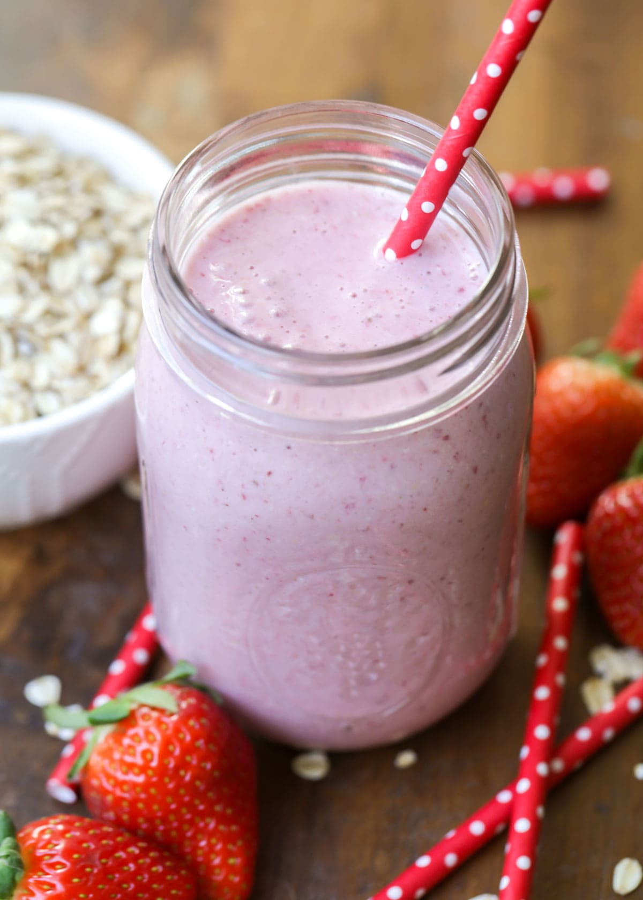

Breakfast Smoothie

Description
This vegan oatmeal smoothie has a deep pink color and a rich, creamy texture.
It's very filling, and perfect for people in a rush in the morning. You don't
have to give up a good breakfast when it's this fast to make! I use vitamin fortified soy milk.
Ingredients
- 1 cup soy milk
- ½ cup rolled oats
- 14 frozen strawberries
- 1 banana, broken into chunks
- 1 ½ teaspoons white sugar (Optional)
- ½ teaspoon vanilla extract (Optional)
Steps
- Blend soy milk, oats, strawberries, and banana in a blender until smooth. Add sugar and vanilla and blend again until smooth.
- Pour into glasses and serve.
Nutrition
142 calories; protein 6.6g; carbohydrates 21.3g; fat 3.5g; sodium 63.2mg.